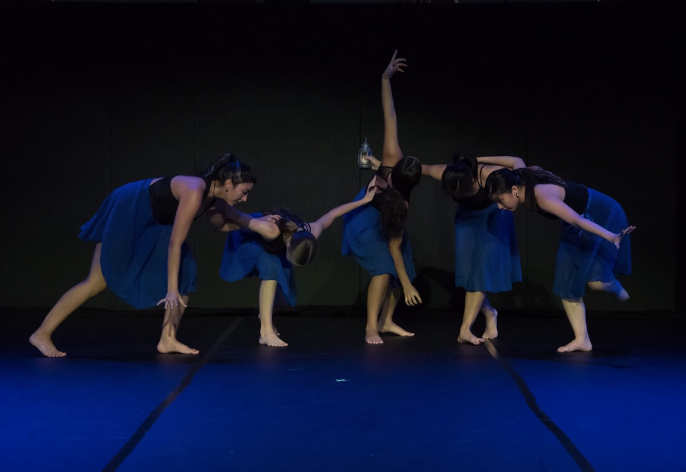

Leaving home for the first time and navigating a new environment at such a young age was both exciting and overwhelming. Attending Miss Porter’s, an all-girls boarding school in Farmington, Connecticut, was my first real experience with independence, but it also became a time when I struggled with my identity. Meeting new people from all over the world was eye-opening, yet I often felt a sense of distance—especially from my family. COVID made this even harder. Travel restrictions meant I couldn’t return to Hong Kong for long periods, and that separation made me miss home even more. I found myself caught between two worlds, trying to adapt while feeling disconnected from where I came from. This experience, though challenging, ultimately pushed me to reflect on who I was, deepening my understanding of my identity and shaping the person I am today.
The beautiful campus where I spent four years growing and learning.

Boarding life was a huge part of my experience, teaching me independence and resilience.
The incredible friends I met during my time at Miss Porter's.